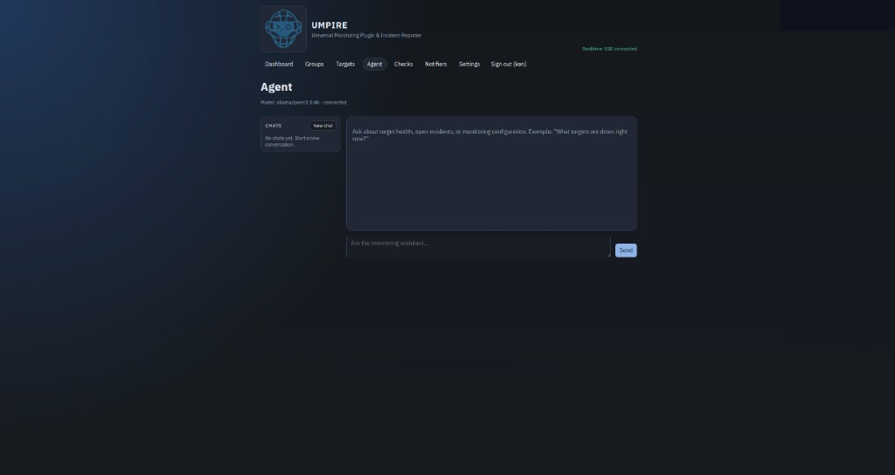

Monitoring assistant
Ask natural-language questions about target health, open incidents, and configuration.
Chat history in the web UI
Works with your configured LLM provider
Same server the extension connects to
